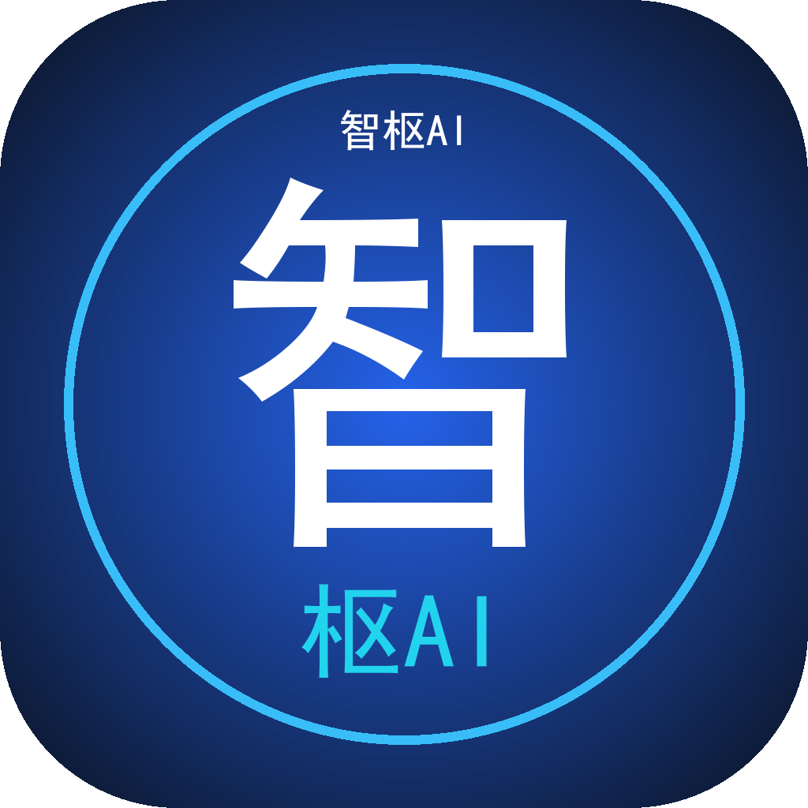
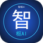
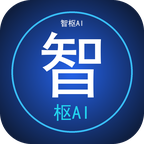
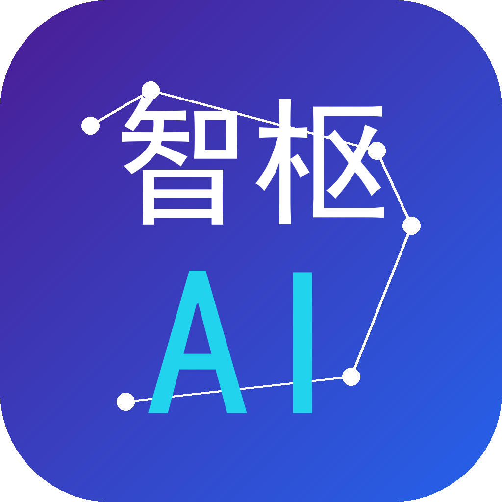
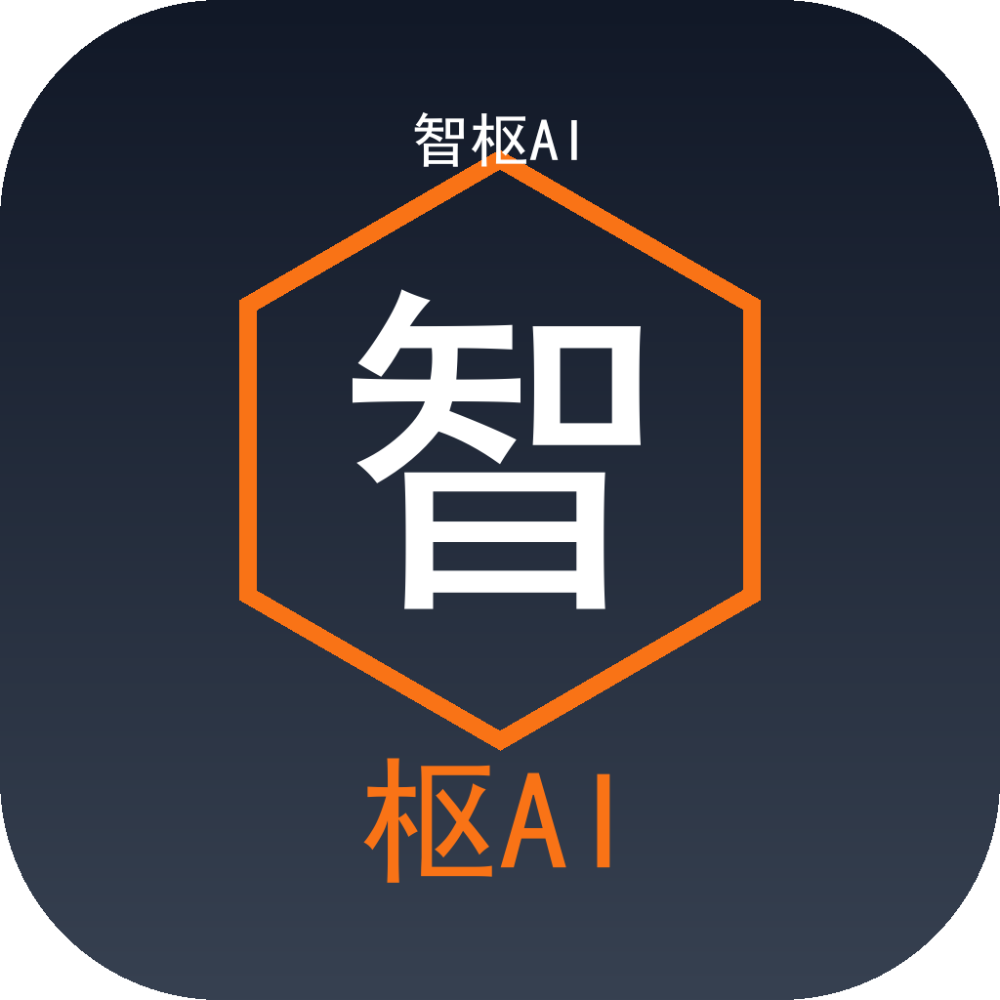
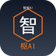
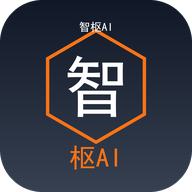

请从三个方案中挑选确认。下方同时展示了桌面/手机桌面常见尺寸下的显示效果。







识别策略：三个方案均以「智」字或「智枢AI」作为核心识别，同时保留圆角矩形外轮廓，符合 Windows 与 Android 桌面图标的系统规范。
尺寸适配：已按 1024 / 512 / 256 / 192 / 144 / 72 / 48 像素导出 PNG。Windows 桌面端会用到 30×30 ~ 310×310 多种规格；APK 端主要使用 48×48、72×72、144×144、192×192。
选中后交付：确认方案后，我会将该方案按 Tauri 图标规范生成全部 Windows 尺寸（Square30x30Logo ~ Square310x310Logo、StoreLogo），并替换 APK 端的 logo.png 与自适应图标资源。